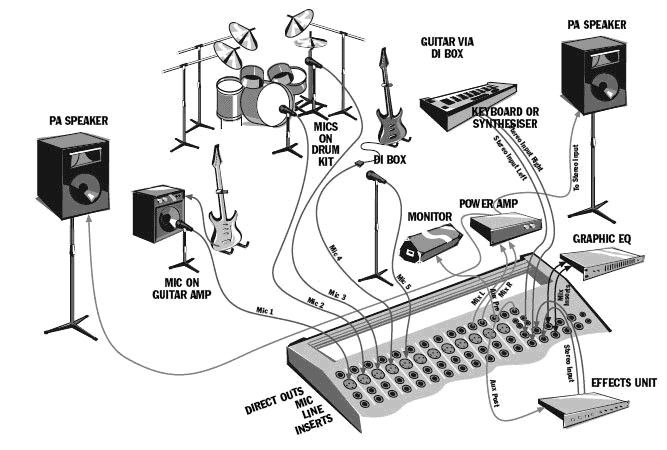
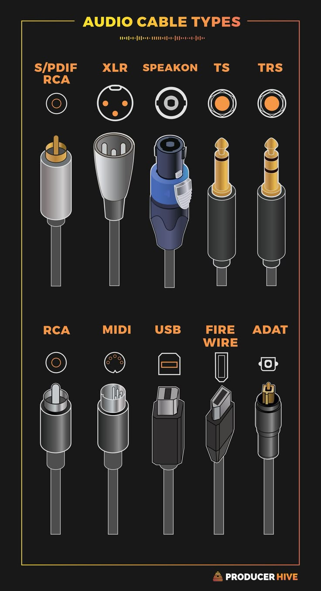
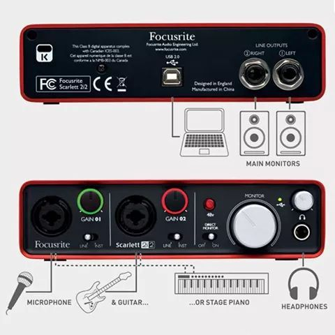
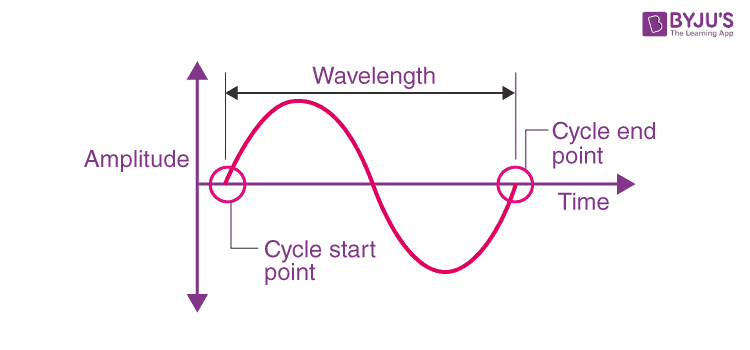
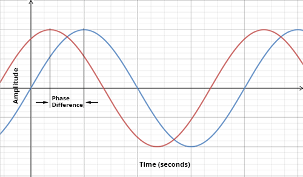
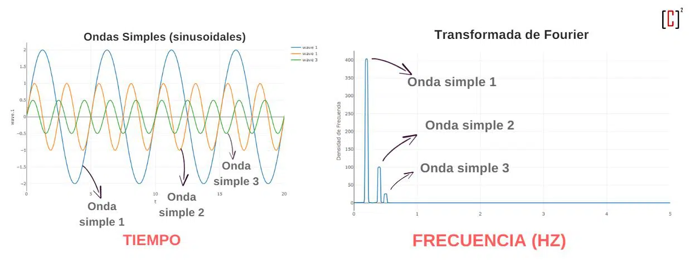
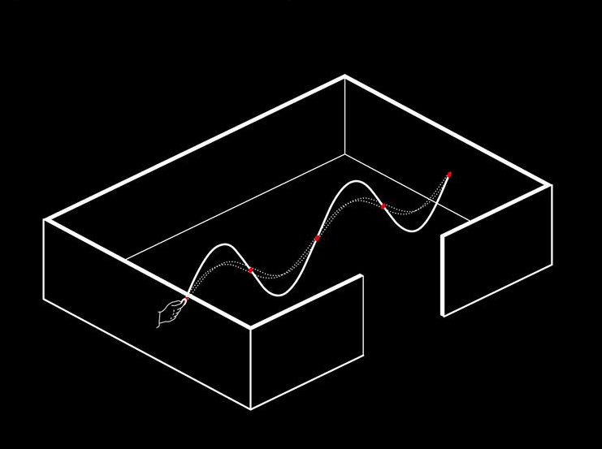
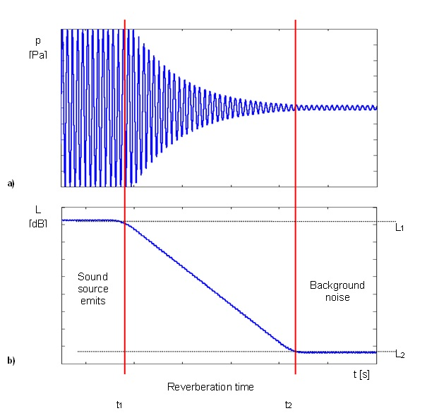
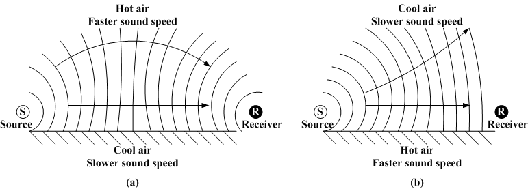

ISDE / Lección 01
Fundamentos de acústica
Elementos de un sistema de sonido, fundamentos físicos del sonido y conceptos esenciales para sonorizar un evento.
01 · Elementos de sonorización
Un sistema de sonorización está formado por dispositivos que permiten captar, procesar, amplificar y reproducir el sonido.
| Elemento | Qué hace |
|---|---|
| Previos (preamplificadores) | Elevan la señal de entrada hasta un nivel suficiente para que el resto del sistema pueda trabajar con ella. |
| Procesadores de señal | Modifican la señal: ecualizadores, compresores, limitadores, puertas de ruido y efectos (reverb, delay…). |
| Micrófonos | Convierten el sonido en electricidad mediante la vibración de una membrana. Pueden ser dinámicos, de condensador o de cinta, y tener distintos patrones polares. |
| Altavoces | Convierten la señal eléctrica en sonido: PA, monitores, subgraves, line arrays… |
| Amplificadores | Aumentan la potencia de la señal para mover los altavoces. |
| Cableado | Conductores aislados y protegidos por una funda. Hay cables balanceados y no balanceados, y conectores analógicos y digitales: XLR, TRS (jack), RCA, Speakon… |



02 · Fundamentos físicos del sonido
| Concepto | Qué es |
|---|---|
| Frecuencia | Número de ciclos por segundo de una onda. Se mide en hercios (Hz) y la percibimos como tono: grave o agudo. |
| Longitud de onda | Distancia entre dos puntos equivalentes de la onda. A mayor frecuencia, menor longitud de onda. |
| Fase | Momento del ciclo en el que se encuentra una onda. Dos ondas en fase se suman; en contrafase se cancelan, total o parcialmente. |
| Velocidad del sonido | Unos 343 m/s en el aire a 20 °C. Varía con la temperatura y con el medio. |



03 · Decibelios y nivel de presión sonora
Decibelio (dB)
Unidad logarítmica que expresa la relación entre dos magnitudes. No mide una cantidad absoluta, sino una comparación entre dos niveles de energía o de presión.
Nivel de presión sonora (SPL)
Indica cuánta presión acústica genera un sonido respecto a un valor de referencia (el umbral de audición). Se expresa en dB SPL.
LUFS (Loudness Units Full Scale)
Miden la sonoridad percibida: lo fuerte que nos parece un sonido. Nuestro oído no reacciona igual a todas las frecuencias: percibimos menos los graves muy bajos y somos más sensibles a los medios.
Spotify
Normaliza en torno a −14 LUFS.
Televisión europea
La norma EBU R128 fija −23 LUFS.
04 · Reflexión, absorción, reverberación y resonancia
| Reflexión | El sonido rebota en una superficie. |
| Absorción | Un material disipa parte de la energía sonora y reduce la reflexión. |
| Reverberación | El sonido persiste después de que la fuente haya parado, por las múltiples reflexiones en el recinto. |
| Resonancia | Se amplifican ciertas frecuencias cuando coinciden con la frecuencia natural de un espacio o de un objeto. |

05 · Tiempo de reverberación (RT60)
RT60 es el tiempo que tarda el nivel de un sonido en bajar 60 dB después de que la fuente deje de emitir.
El valor adecuado depende del uso del espacio: aulas, teatros, estudios… Si es demasiado alto, el sonido pierde claridad; si es muy bajo, el espacio suena «muerto» o apagado.

06 · Temperatura y humedad
- Temperatura: con más temperatura, el sonido viaja más rápido; con menos, más despacio.
- Humedad: el aire húmedo absorbe menos y deja que las frecuencias agudas lleguen más lejos.
- En exteriores son factores clave: cambian cómo se dispersa el sonido y el volumen que percibe el público.
